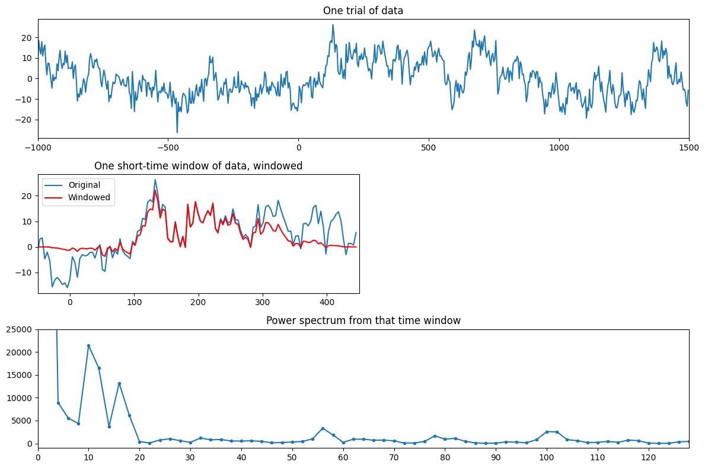
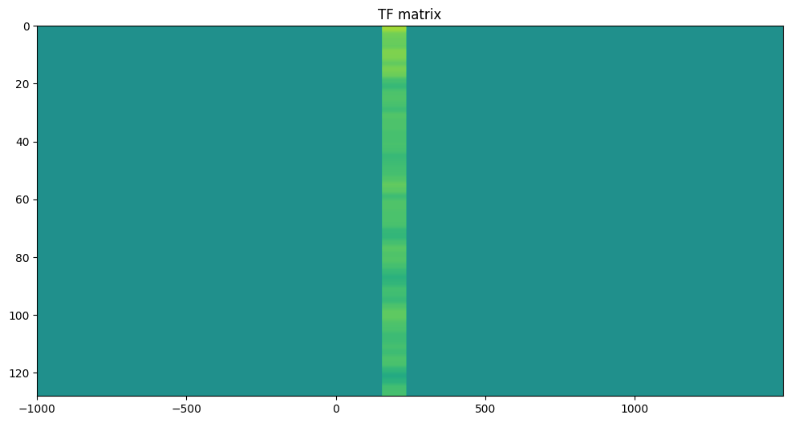
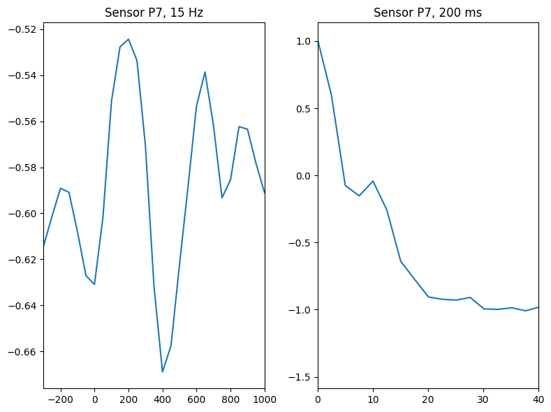
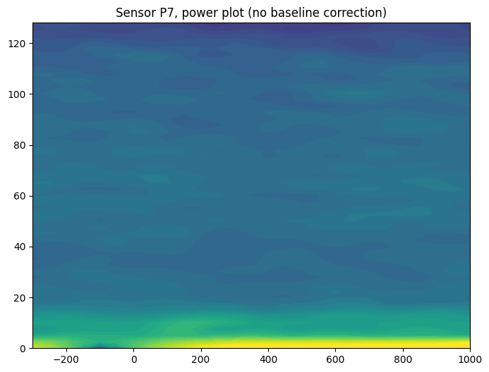
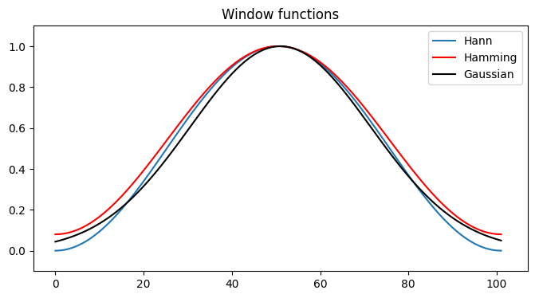
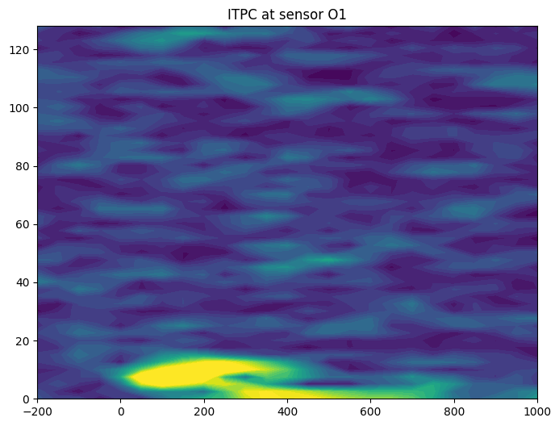
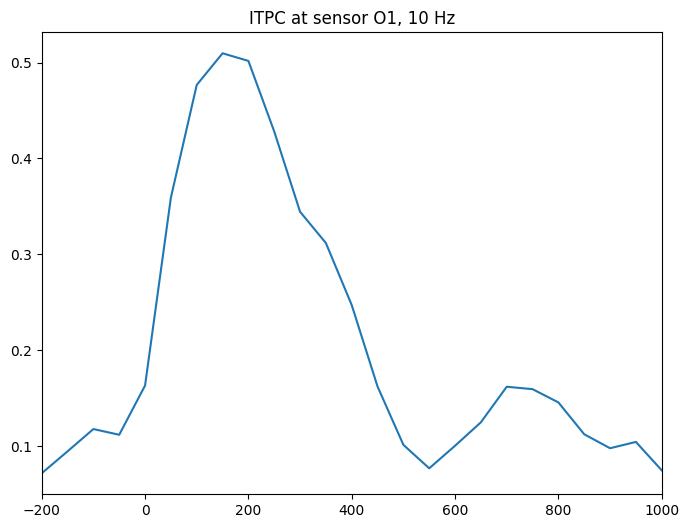

# Import necessary libraries
import numpy as np
import matplotlib.pyplot as plt
from scipy.signal import detrend
from scipy.fft import fft
from scipy.io import loadmatChapter 15
Analyzing Neural Time Series Data
Python code for Chapter 15 – converted from original Matlab by AE Studio (and ChatGPT)
Original Matlab code by Mike X Cohen
This code accompanies the book, titled “Analyzing Neural Time Series Data” (MIT Press).
Using the code without following the book may lead to confusion, incorrect data analyses, and misinterpretations of results.
Mike X Cohen and AE Studio assume no responsibility for inappropriate or incorrect use of this code.
# Figure 15.1
# Load sample EEG data
EEG = loadmat('../data/sampleEEGdata.mat')['EEG'][0, 0]
# Define time window in ms
timewin = 500
# Convert ms to index
timewinidx = round(timewin / (1000 / EEG['srate'][0][0]))
# Create Hann taper function
hann_win = 0.5 * (1 - np.cos(2 * np.pi * np.arange(timewinidx) / (timewinidx - 1)))
# Detrend data
d = detrend(EEG['data'][19, :, 15])
# Plot one trial of data
plt.figure(figsize=(12, 8))
plt.subplot(311)
plt.plot(EEG['times'][0], d)
plt.xlim([-1000, 1500])
plt.title('One trial of data')
# Find the sample time closest to -50 ms
stime = np.argmin(np.abs(EEG['times'][0] - (-50)))
# Plot one short-time window of data, windowed
plt.subplot(323)
plt.plot(EEG['times'][0][stime:stime + timewinidx], d[stime:stime + timewinidx], label='Original')
plt.plot(EEG['times'][0][stime:stime + timewinidx], d[stime:stime + timewinidx] * hann_win, 'r', label='Windowed')
plt.xlim([-50, -50 + timewin])
plt.title('One short-time window of data, windowed')
plt.legend()
# Compute power spectrum from that time window
dfft = fft(d[stime:stime + timewinidx] * hann_win)
f = np.linspace(0, EEG['srate'][0][0] / 2, int(np.floor(len(hann_win) / 2)) + 1)
plt.subplot(313)
plt.plot(f[1:], np.abs(dfft[1:int(np.floor(len(hann_win) / 2)) + 1]) ** 2, '.-')
plt.title('Power spectrum from that time window')
plt.xlim([1, 128])
plt.ylim([-1000, 25000])
plt.xticks(np.arange(0, EEG['srate'][0][0] / 2 + 1, 10))
plt.tight_layout()
plt.show()
# Create TF matrix and input column of data at selected time point
tf = np.zeros((int(np.floor(len(hann_win) / 2)), EEG['pnts'][0][0]))
tf[:, stime + int(timewinidx / 2) - 11:stime + int(timewinidx / 2) + 10] = np.tile(np.abs(dfft[1:int(np.floor(len(hann_win) / 2)) + 1]) * 2, (21, 1)).T
# Plot TF matrix
plt.figure(figsize=(12, 6))
plt.imshow(np.log10(tf + 1), aspect='auto', extent=[EEG['times'][0][0], EEG['times'][0][-1], f[0], f[-1]], origin='lower')
plt.gca().invert_yaxis()
plt.clim([-4, 4])
plt.title('TF matrix')
plt.show()

# Figure 15.2
# Define parameters
timewin = 400 # in ms, for stFFT
times2save = np.arange(-300, 1050, 50) # in ms
channel2plot = 'P7'
frequency2plot = 15 # in Hz
timepoint2plot = 200 # ms
# Convert from ms to index
times2saveidx = [np.argmin(np.abs(EEG['times'][0] - t)) for t in times2save]
timewinidx = round(timewin / (1000 / EEG['srate'][0][0]))
chan2useidx = EEG['chanlocs'][0]['labels']==channel2plot
# Create Hann taper
hann_win = 0.5 * (1 - np.cos(2 * np.pi * np.arange(timewinidx) / (timewinidx - 1)))
# Define frequencies
frex = np.linspace(0, EEG['srate'][0][0] / 2, int(np.floor(timewinidx / 2)) + 1)
# Initialize power output matrix
tf = np.zeros((len(frex), len(times2save)))
# Loop over time points and perform FFT
for timepointi, tidx in enumerate(times2saveidx):
# Extract time series data for this center time point
tempdat = np.squeeze(EEG['data'][chan2useidx, tidx - int(np.floor(timewinidx / 2)) - 1:tidx + int(np.floor(timewinidx / 2)) - (timewinidx + 1) % 2, :])
# Taper data
taperdat = tempdat * hann_win[:, None]
# Perform FFT
fdat = fft(taperdat, axis=0) / timewinidx
tf[:, timepointi] = np.mean(np.abs(fdat[0:int(np.floor(timewinidx / 2)) + 1, :]) ** 2, axis=1) # Average over trials
# Plot
plt.figure(figsize=(8, 6))
plt.subplot(121)
freq2plotidx = np.argmin(np.abs(frex - frequency2plot))
plt.plot(times2save, np.mean(np.log10(tf[freq2plotidx - 2:freq2plotidx + 3, :]), axis=0))
plt.title(f'Sensor {channel2plot}, {frequency2plot} Hz')
plt.xlim([times2save[0], times2save[-1]])
plt.subplot(122)
time2plotidx = np.argmin(np.abs(times2save - timepoint2plot))
plt.plot(frex, np.log10(tf[:, time2plotidx]))
plt.title(f'Sensor {channel2plot}, {timepoint2plot} ms')
plt.xlim([frex[0], 40])
plt.tight_layout()
plt.show()
plt.figure(figsize=(8, 6))
plt.contourf(times2save, frex, np.log10(tf), 40, cmap='viridis', linestyles='None')
plt.clim([-2, 1])
plt.title(f'Sensor {channel2plot}, power plot (no baseline correction)')
overlap = 100 * (1 - np.mean(np.diff(times2save)) / timewin)
print(f'Overlap of {overlap}%')
plt.show()
Overlap of 87.5%
# Figure 15.3
# Create Hamming and Hann windows
hamming_win = 0.54 - 0.46 * np.cos(2 * np.pi * np.arange(timewinidx) / (timewinidx - 1))
hann_win = 0.5 * (1 - np.cos(2 * np.pi * np.arange(timewinidx) / (timewinidx - 1)))
# Create Gaussian window
gaus_win = np.exp(-0.5 * ((2.5 * np.arange(-timewinidx / 2, timewinidx / 2)) / (timewinidx / 2)) ** 2)
# Plot together
plt.figure(figsize=(8, 4))
plt.plot(hann_win, label='Hann')
plt.plot(hamming_win, 'r', label='Hamming')
plt.plot(gaus_win, 'k', label='Gaussian')
plt.legend()
plt.xlim([-5, timewinidx + 5])
plt.ylim([-0.1, 1.1])
plt.yticks(np.arange(0, 1.1, 0.2))
plt.title('Window functions')
plt.show()
# Figure 15.6
# Define parameters
chan2use = 'O1'
frequency2plot = 10 # in Hz
# Find the index of the frequency to plot
freq2plotidx = np.argmin(np.abs(frex - frequency2plot))
# Initialize ITPC output matrix
itpc = np.zeros((len(frex), len(times2save)))
# Loop over time points and perform FFT
for timepointi, tidx in enumerate(times2saveidx):
# Extract time series data for this center time point
tempdat = np.squeeze(EEG['data'][EEG['chanlocs'][0]['labels']==chan2use, tidx - int(np.floor(timewinidx / 2)) - 1:tidx + int(np.floor(timewinidx / 2)) - (timewinidx + 1) % 2, :])
# Taper data
taperdat = tempdat * hann_win[:, None]
# Perform FFT
fdat = fft(taperdat, axis=0) / timewinidx
# Compute ITPC
itpc[:, timepointi] = np.abs(np.mean(np.exp(1j * np.angle(fdat[0:int(np.floor(timewinidx / 2)) + 1, :])), axis=1)) # Average over trials
# Plot ITPC
plt.figure(figsize=(8, 6))
plt.contourf(times2save, frex, itpc, 40, cmap='viridis', linestyles='None')
plt.clim([0, 0.5])
plt.xlim([-200, 1000])
plt.title(f'ITPC at sensor {chan2use}')
plt.figure(figsize=(8, 6))
plt.plot(times2save, np.mean(itpc[freq2plotidx - 2:freq2plotidx + 3, :], axis=0))
plt.title(f'ITPC at sensor {chan2use}, {frequency2plot} Hz')
plt.xlim([-200, 1000])
plt.show()
